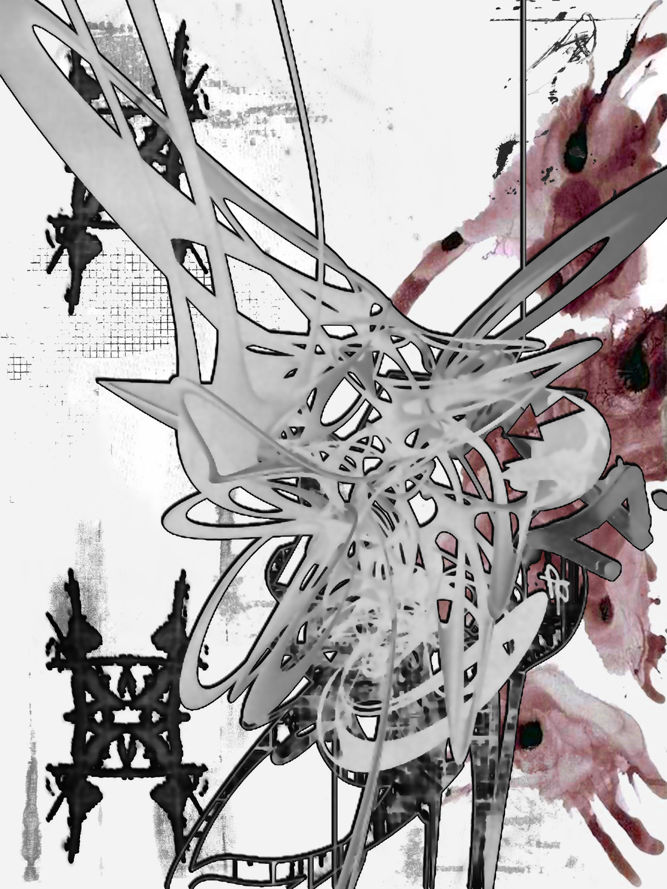

Vybrané práce, 2023 - 2026. Scroll for the full set, click any frame to see it larger.

Jeden outfit, sedm inzerátů
Sedm samostatně vyfocených kousků, sladěných a poskládaných do jednoho setu — vytvořeno pro prodej na Vinted.


Kallis House
Interior stills retouched for print. Window pulls, verticals, and a warm neutral base.


Meridian, 60 seconds
Brand film cut from six hours of rushes. Three versions delivered in a day.


Studio portraits
Skin and tonal work for a company profile series. Twenty-eight sitters.


Harbour, night
Underexposed rushes recovered and graded for a music video.


Four plates, one room
Composite for a furniture catalogue, assembled from separately lit exposures.


Archive restoration
Family negatives from 1961, cleaned and rebuilt where the emulsion had lifted.


Salt
Short film, 12 minutes. Edit, titles, and sound handover.
Looking for something that isn't here? Ask for the full reel.